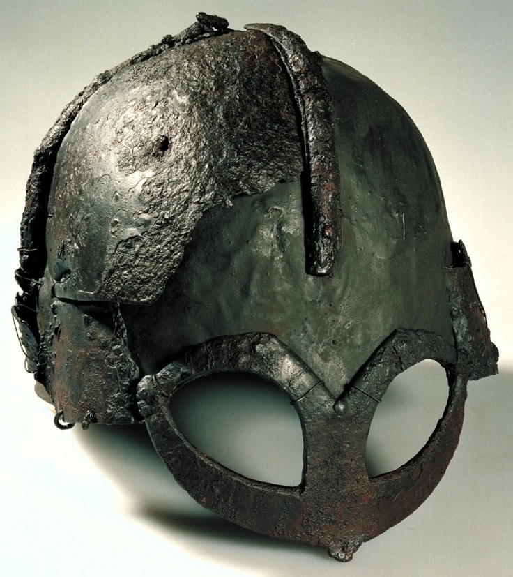
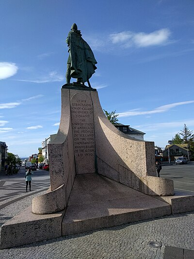
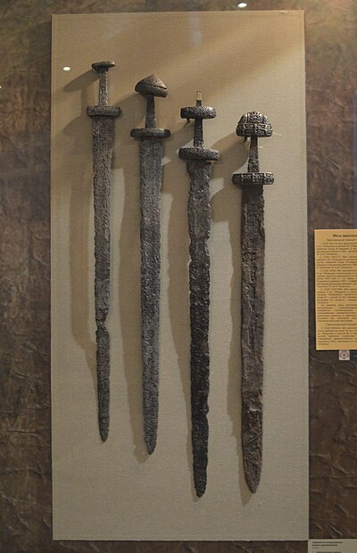
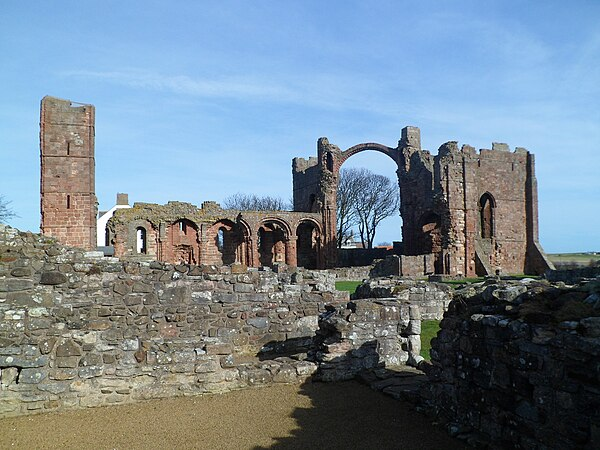
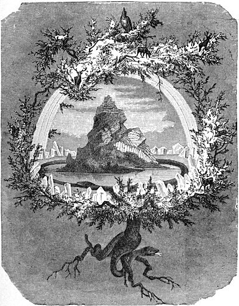
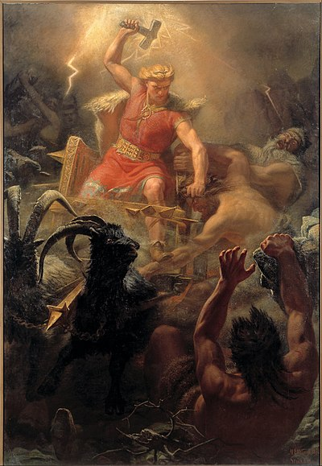
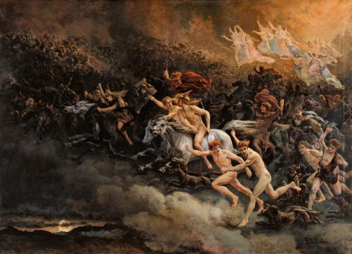

The Viking Age
Norse Raiders, Traders & Explorers — From Scandinavia to the New World
793 AD – 1066 AD · The Age of the Northmen
Legendary Viking Leaders

Ragnar Lothbrok
Legendary Hero · c. 9th Century
Semi-legendary Norse hero and legendary king of Denmark and Sweden. Famous for raiding Paris in 845 AD. Whether historical or myth, his sons — including Ivar the Boneless and Björn Ironside — were very real and devastated Europe.

Leif Eriksson
c. 970–1020 · First European in America
Norse explorer who sailed from Greenland to North America around 1000 AD — nearly 500 years before Columbus. Established the settlement of Vinland at L'Anse aux Meadows (Newfoundland), confirmed by archaeology in 1960.
Harald Hardrada
1015–1066 · Last Great Viking King
King of Norway and one of history's most formidable warriors. Served in the Byzantine Varangian Guard before claiming Norway. His defeat at the Battle of Stamford Bridge (1066) marks the traditional end of the Viking Age.

Rollo of Normandy
c. 860–930 · First Duke of Normandy
Norse chieftain who besieged Paris (885 AD). King Charles the Simple ceded Normandy to him in 911 AD to stop the raids. His descendants — the Normans — would conquer England in 1066 and Sicily in 1071.
Erik the Red
c. 950–1003 · Colonizer of Greenland
Exiled from Iceland for manslaughter, Erik sailed west and discovered (and named) Greenland, establishing the first European settlement there in 985 AD. His son Leif would go even further west.
Cnut the Great
c. 990–1035 · King of England, Denmark & Norway
One of the most powerful Viking rulers, who controlled an empire spanning the North Sea. Known for the legendary (misunderstood) tale of commanding the tide — used to demonstrate to his flatterers that only God had true power.
Norse Expansion & Trade

The Danelaw
Northern England · 865–954 AD
The Great Heathen Army of 865 AD conquered most of England, establishing the Danelaw — Norse-controlled territory with its own laws. York (Jorvik) became a thriving Norse city; DNA traces show 6% of English men carry Scandinavian Y-chromosomes.
Varangian Trade Routes
Russia · Constantinople
Swedish Varangians (Rus') traveled the great river systems of Eastern Europe, founding Novgorod and Kiev, trading with Byzantium and the Islamic world. They gave Russia its name — and served as elite imperial guards in Constantinople.
Iceland & the Sagas
Settled 874 AD · Literary Tradition
Norse settlers arrived in Iceland around 874 AD and created the world's oldest parliament (Althing, 930 AD). The Icelandic Sagas — written in the 12th–13th centuries — preserve history, mythology, and legal traditions in remarkable detail.

Norse Mythology & Religion
Asgard · Odin · Thor · Ragnarök
The Norse pantheon: Odin (all-father, god of wisdom and war), Thor (god of thunder), Freya (goddess of love and war), Loki (trickster). The world tree Yggdrasil connects nine realms. Ragnarök — the twilight of the gods — is history's most dramatic apocalypse myth.
Timeline of the Viking Age

793
Raid on Lindisfarne
Vikings attack the holy island monastery of Lindisfarne off northeastern England. The event shocked the Christian world and marks the traditional start of the Viking Age.
844
Vikings Raid Seville
A Norse fleet enters the Guadalquivir River and attacks Seville, then part of Islamic Al-Andalus. The Moors drove them off — the Norsemen had raided as far south as Morocco.
865
Great Heathen Army Invades England
A massive Norse army lands in East Anglia — the sons of Ragnar Lothbrok avenging their father. They conquer Northumbria, East Anglia, and much of Mercia, establishing the Danelaw.
911
Treaty of Saint-Clair-sur-Epte
France grants Normandy to Rollo to end Viking raids. The Norse settlers rapidly adopt French language and culture, transforming into the Normans who will shape medieval Europe.
1000
Leif Eriksson Reaches America
Leif Eriksson sails from Greenland and lands in North America, establishing a camp at Vinland. Archaeological evidence at L'Anse aux Meadows confirms Norse presence 500 years before Columbus.
1066
Battle of Stamford Bridge
King Harold II of England defeats and kills the last great Viking king, Harald Hardrada, ending the Viking threat from Norway. Three days later, Harold faces William the Conqueror at Hastings — and loses.
The Longship — Terror of the Seas
Click to summon more longships — the Norse fleet crosses the North Sea
The Norse Pantheon
Odin
Allfather — God of War, Wisdom & Death
Odin sacrificed his eye at Mimir's well for cosmic wisdom, and hung himself on Yggdrasil for nine days to learn the runes. He rules Valhalla where half the slain warriors feast until Ragnarök. His ravens Huginn (Thought) and Muninn (Memory) fly across the nine worlds each day and report what they see.
Thor
God of Thunder & Protector of Humanity
The most widely worshipped Norse god, Thor wields Mjölnir — his magical hammer that always returns to his hand. He drives a chariot pulled by two giant goats (Tanngrisnir and Tanngnjóstr) and creates thunder. The day Thursday (Þórsdagr) is named for him. He is the sworn enemy of the Jötnar (giants).

Loki
The Trickster God
The shape-shifting trickster whose mischief ranged from harmless pranks to catastrophic betrayal. Loki fathered the Fenrir wolf, the Midgard Serpent, and the death goddess Hel. After engineering the death of Odin's beloved son Baldr, he was bound beneath the earth until Ragnarök, when he will sail the dead to battle the gods.
Ragnarök
The Twilight of the Gods
The prophesied end of the world: Fenrir breaks free, the Midgard Serpent rises from the sea, Loki leads the dead against Asgard. Odin will be swallowed by Fenrir; Thor will kill the Midgard Serpent but die from its venom. After Ragnarök, the world will be reborn, and two humans will repopulate the earth.

Viking Settlements & Society
Longhouse
The Heart of Norse Life
The longhouse — up to 75 meters long — was the social center of Viking life. Animals lived at one end for warmth; the family at the other. A central hearth provided heat and light. A wealthy jarl's longhouse might house 30-50 people including family, servants, and slaves (thralls). The High Seat (Öndvegissúlur) marked the lord's authority.
Hedeby
The Crossroads of the Viking World
Located in modern Germany near Schleswig, Hedeby was one of the most important trading towns of the Viking Age. Arabic silver, Frankish wine, Slavic furs, and Byzantine silks all passed through its markets. Arab traveler Ibrahim ibn Yaqub visited around 965 AD and was struck by the city's singing, which he found terrible.
Thing
Democratic Assembly
The Thing (þing) was the Viking assembly where free men gathered to settle disputes, make laws, and elect leaders. Iceland's Althing, established in 930 AD, is the world's oldest parliament still in operation. Viking society was notably participatory — even slaves could purchase their freedom and eventually join the free farmer class.